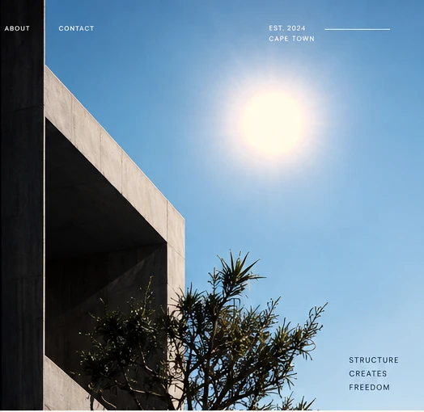
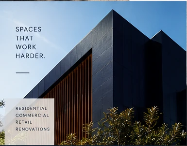
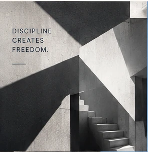
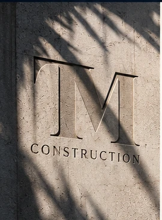
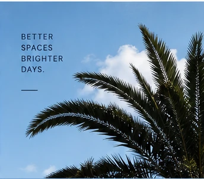
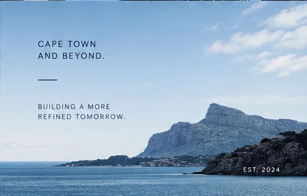

A considered way forward 01
Built with
intention.
A mobile-first concept for a construction and refurbishment practice. The detail is where the direction begins.
Start an enquiry
Good spaces
hold their ground.
This concept makes room for clarity: a direct path from first impression to enquiry, with the material character of the work kept in view.
Business details, services and contact routing will be added only after verification.
A visual study 03
The work
speaks in layers.
Material, structure, light. The image system is designed to be replaced directly when final photography is ready.

Material studies 04
A closer
look.
Swipe on mobile or use the controls to move through the visual direction. Nothing essential is hidden here.




The next line is yours 05
Let’s make
space for better.
Enquiry routing is currently being confirmed. This concept proves the placement and path without inventing contact details.